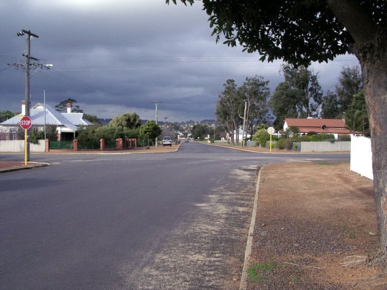
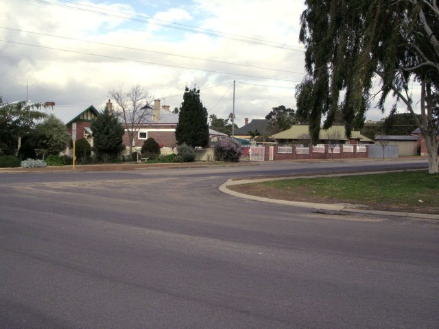
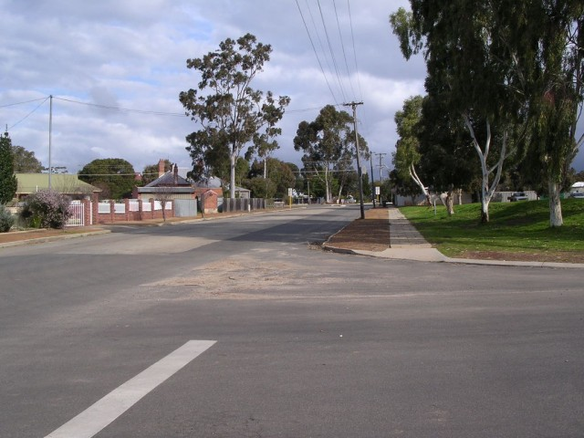
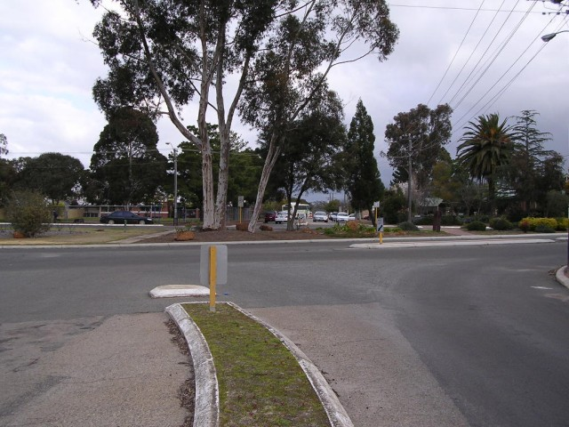
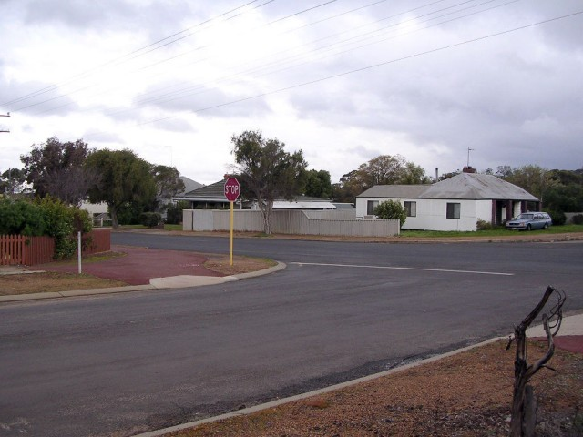
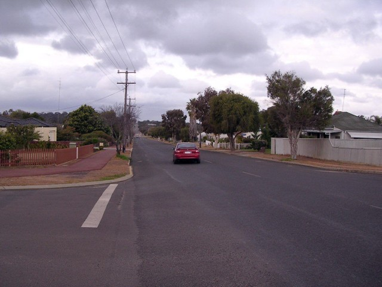
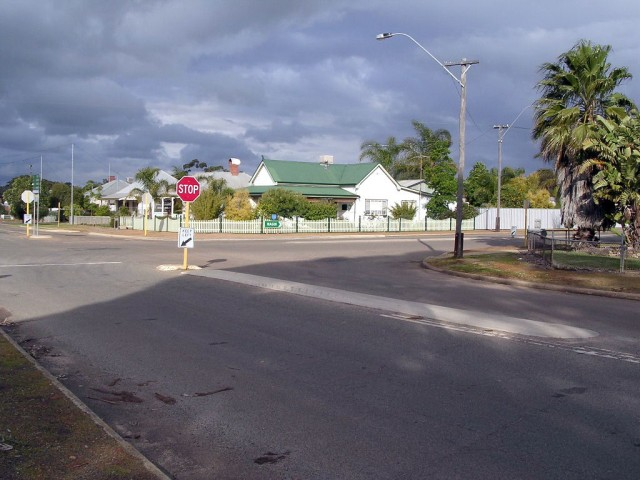
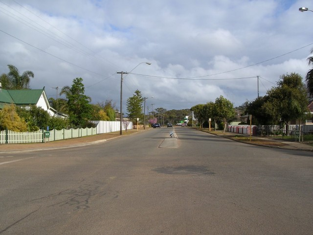

Numbers on the map represent the location where the photographs were taken. Scroll down to view the photographs.
Narrogin (GP Variant) - Jersey Street via Glyde Street to Forrest Street
|| Contents || Clayton / Lefroy / Lock | Jersey / Glyde / Forrest | Federal / Fairway | Federal || Home ||
Numbers on the map represent the location where the photographs were taken. Scroll
down to view the photographs.
Return to racingcircuits.net's Photo Archive Main Index

9 - Slight kink from Lock Street to Jersey Street.

10 - Turn right into Glyde Street.

11 - Glyde Street.

12 - On Glyde Street. Nowadays a right, left, right is required.

13 - Left into Forrest Street.

14 - Forrest Street.

15 - Right into Federal Street.

16 - Federal Street.
Photographs and Text ©Neil Fackerell. Reproduced here with kind permission.